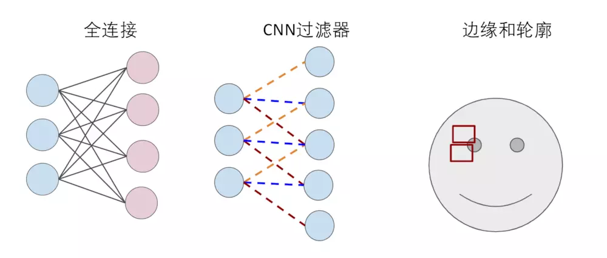
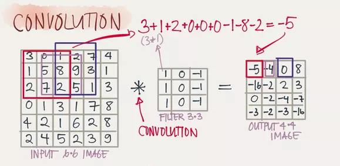
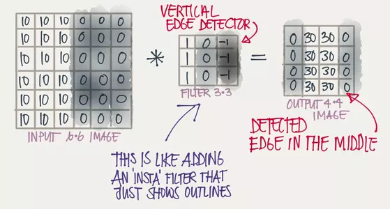
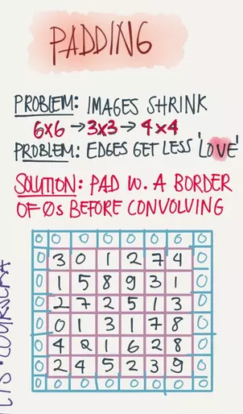
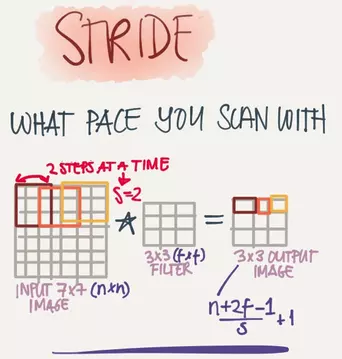
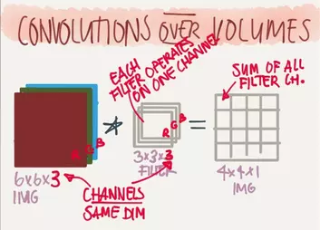
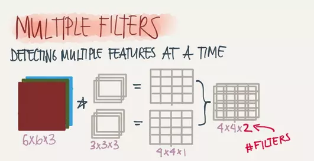
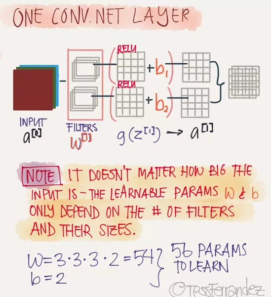
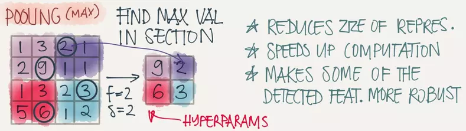
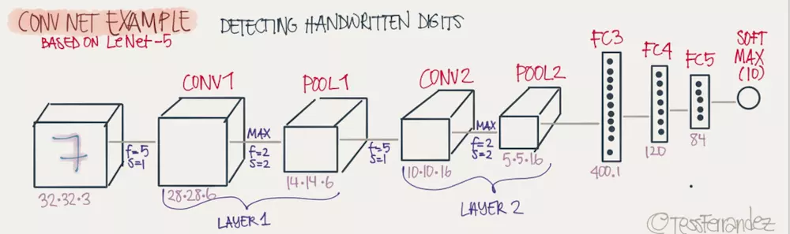

卷积神经网络（Convolutional Neural Network，CNN）是一种前馈神经网络，它的人工神经元可以响应一部分覆盖范围内的周围单元，对于大型图像处理有出色表现。 它包括卷积层(convolutional layer)和池化层(pooling layer)。
背景
在神经网络中，每一层的每个神经元都与下一层的每个神经元相连(如下图)， 这种连接关系叫全连接（Full Connected）。如果以图像识别为例，输入就是是每个像素点，那么每一个像素点两两之间的关系(无论相隔多远)，都被下一层的神经元"计算"了。
这种全连接的方法用在图像识别上面就显得太"笨"了，因为图像识别首先得找到图片中各个部分的"边缘"和"轮廓"，而"边缘"和"轮廓"只与相邻近的像素们有关。
这个时候卷积神经网络(CNN)就派上用场了，卷积神经网络可以简单地理解为，用滤波器(Filter)将相邻像素之间的"轮廓"过滤出来。

卷积(Convolution)
卷积的滤波器（Filter）是如何工作的呢？以下图，一个6x6的图片被一个3x3的滤波器（可以看成一个窗口）卷积为例，3x3的滤波器先和6x6的图片最左上角的3x3矩阵卷积得到结果后，再向右移一步继续卷积（窗口滑动），直到将整个图片过滤完成，输出一个4x4的矩阵(图片)。

这样有什么意义呢？如果如下图所示，被卷积的图片有明显的竖直轮廓（10和0之间有一轮廓，这条轮廓需要被标记出来），用3x3的竖直轮廓滤波器卷积之后，就能发现中间那条非常明显的竖直轮廓（中间30的两个竖排矩阵将竖直的轮廓位置明显地标记了出来）。

填充(Padding)
上面的例子用3x3的将6x6的图片过滤之后输出了一个4x4的图片，那如果我想保证输入和输出的图片尺寸一致怎么办？这个时候我们可以在原图片的边缘进行填充(Padding)，以保证输入和输出的图片尺寸一致。下图就是用0在原图上Padding了一圈。

步长 (Stride)
上面提到用3x3的过滤器去卷积6x6的图片是通过窗口一步一步的移动最终将整个图片卷积完成的，实际上移动的步伐可以迈得更大，这个步伐的长度就叫做步长(Stride)。步长(Stride)和填充(Padding)的大小一起决定了输出层图像的尺寸。

深度(Depth)
这里的深度是指输出层图片的深度，通常图片有红绿蓝(RGB)三个颜色通道(Channel)，那一个滤波器也需要三层滤波器对每个颜色通道进行过滤，于是6x6x3的图片经过3x3x3的滤波器过滤之后最终会得到一个4x4x1的图片，此时输出层图片的深度就是1。

增加滤波器的个数就能增加输出层图片的深度，同时滤波器的个数也决定了输出层图片的深度（两者相等）。下图两个3x3x3的滤波器将6x6x3的图片过滤得到一个4x4x2的图片。

单层完整的CNN
全连接的DNN，每一层包含一个线性函数和一个激活函数，CNN也一样，在滤波器之后还需要一个激活层，在图像识别应用中，激活层通常用的是Relu函数。线性函数有权重W和偏置b，CNN的权重W就是滤波器的数值，偏置b可以加在Relu之后，一个完整的CNN层如下：

池化(Pooling)
用滤波器进行窗口滑动过程中，实际上"重叠"计算了很多冗余的信息，而池化操作就是去除这些冗余信息，并加快运动。Pooling的方式其实有多种，用的最多的是max-pooling就是取一个区域中最大的值，如图将一个4x4的图片max-pooling 一个2x2的图片。

一个完整的深度CNN网络
一个完整的深度CNN网络，通常由多个卷积层加池化层和最后一个或多个完整层(Full connected(FC))构成，如图：

好了，深度卷积神经网络就介绍完了，中间引入了不少概念，理解了这些概念其实CNN网络也十分简单。